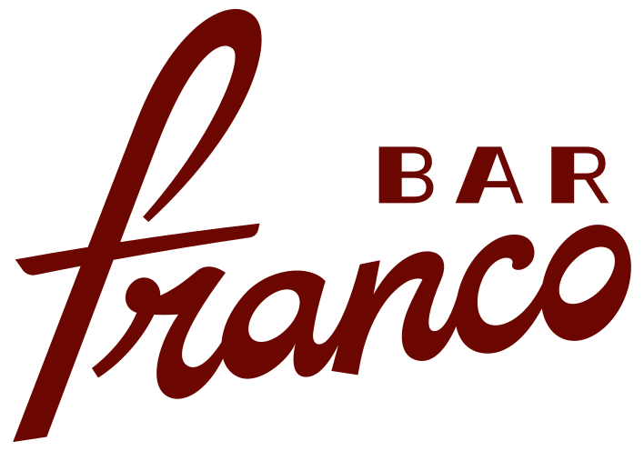
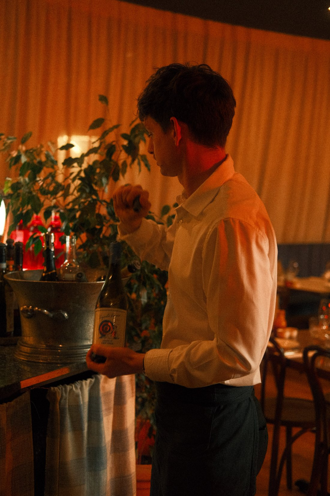
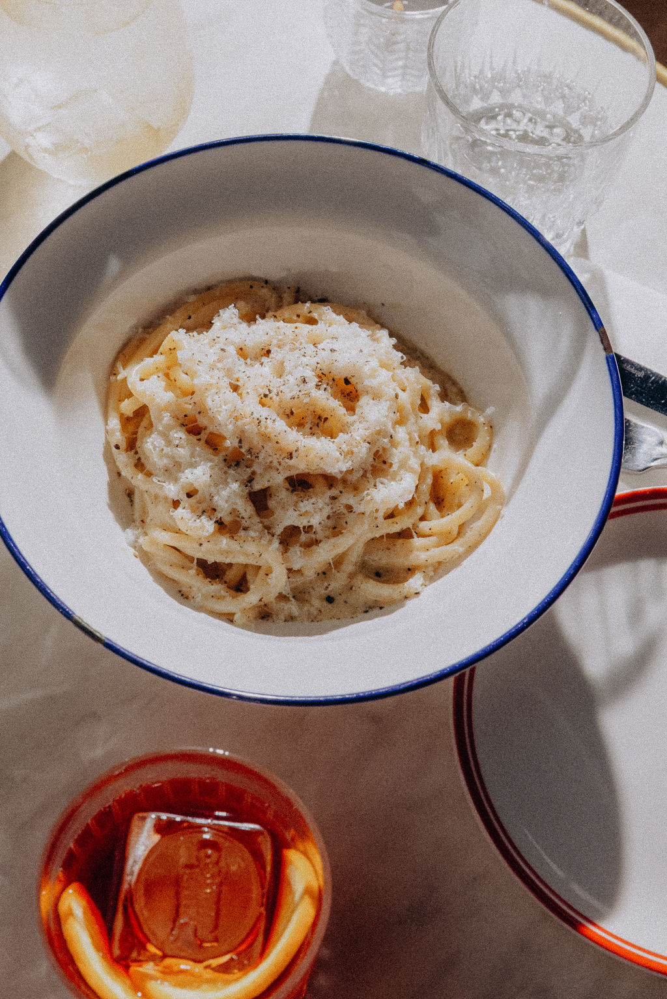
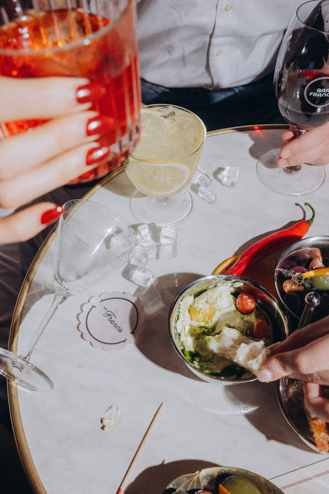
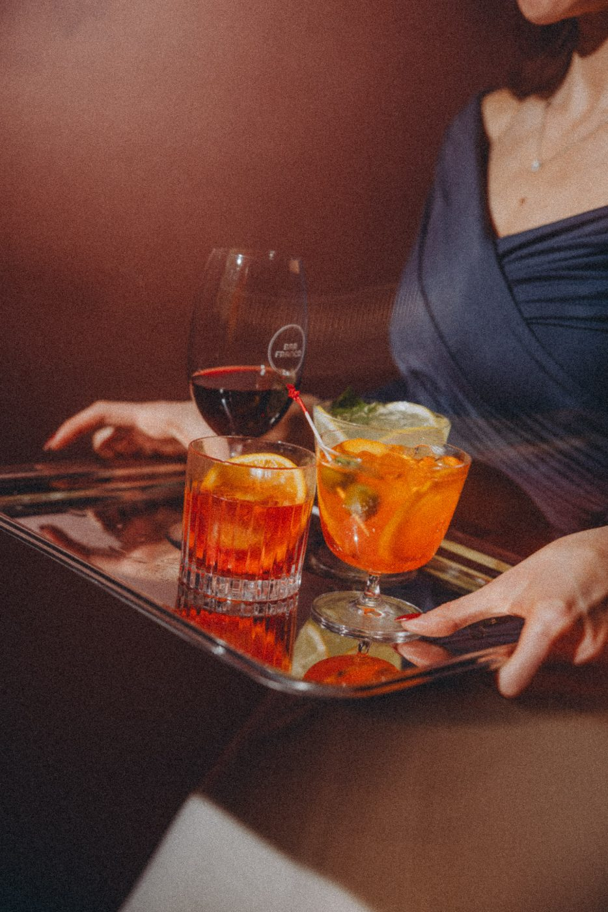
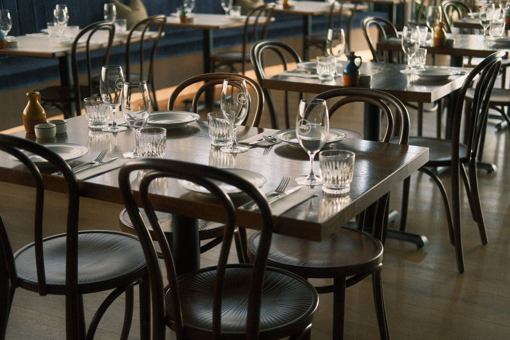
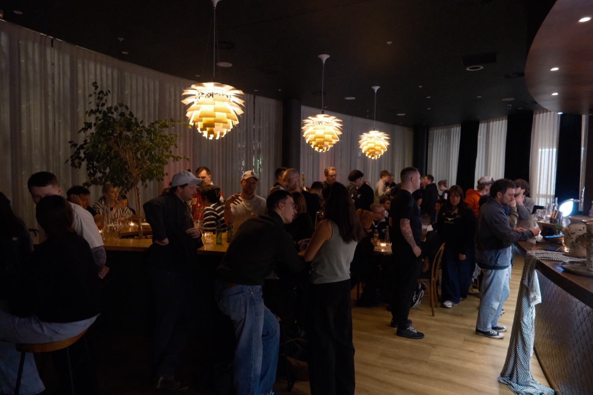
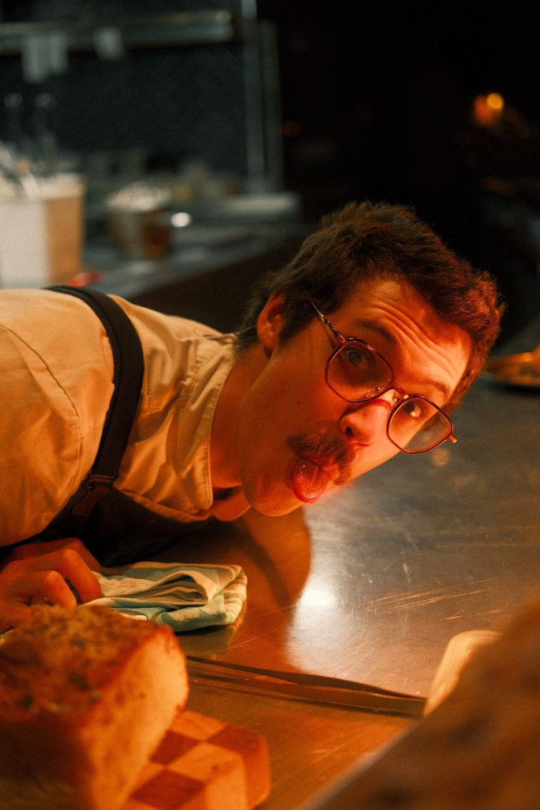
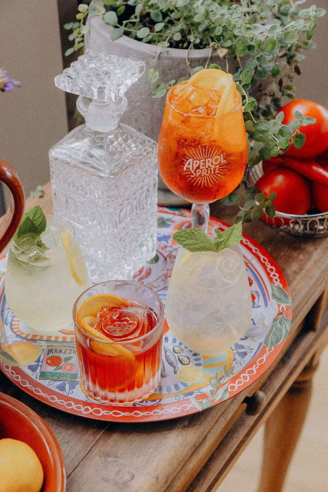
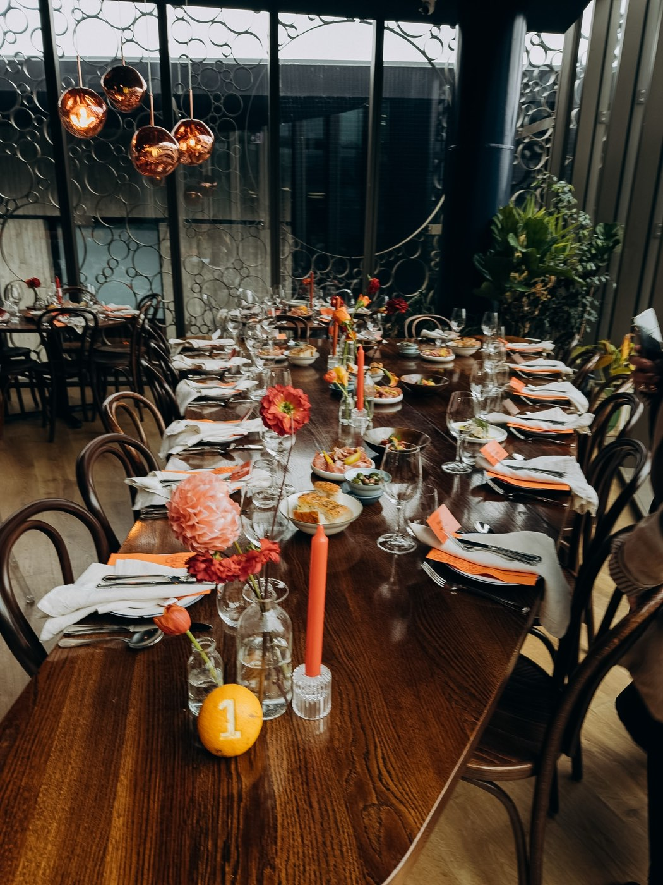

BAR
(Upstairs)Down the laneway4pm till late

Pasta fresca • PizzaNegroni • Aperitivo • Vino
Italian restaurant & Negroni bar · The Crossing, Christchurch
Book a tablePlan an event
Dine at
Franco
Pasta fresca • Negroni • Aperitivo • Vino
(Upstairs) · bar from 4pm · kitchen from 5pm
Book a table
Host at
Franco
Long tables • Cocktail parties • The whole building
One level, or the whole of Franco · two levels
Plan an event01 / 15












Vino, aperitivo and pasta fresca (upstairs) at 166 Cashel St. Pasta rolled in view, Negronis stirred to order, a short walk from One NZ Stadium.